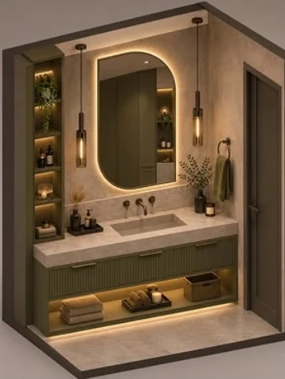
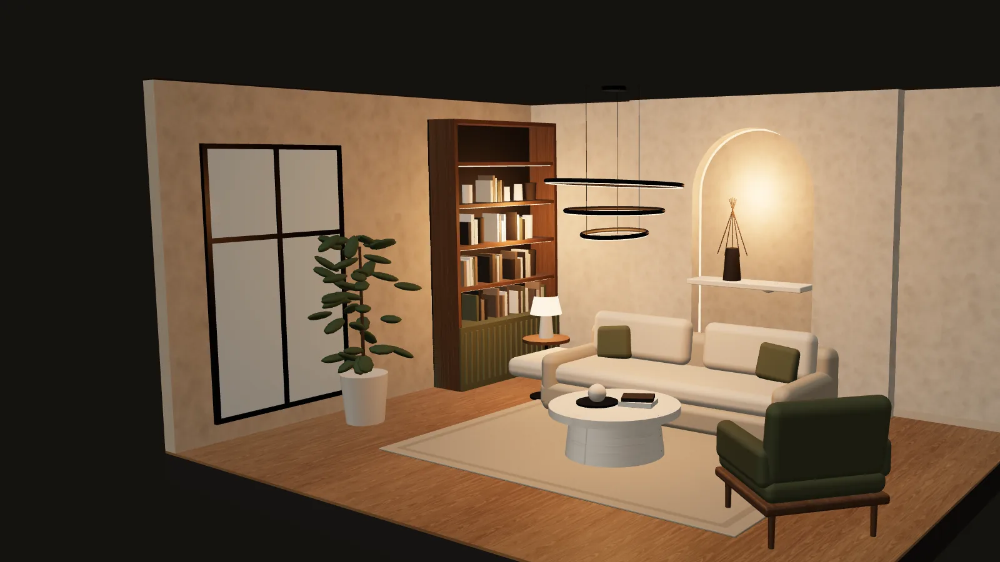
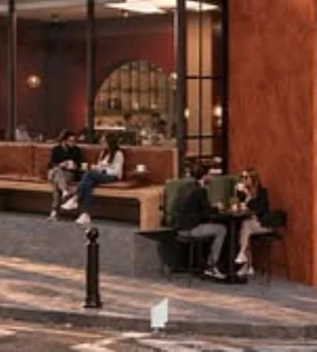
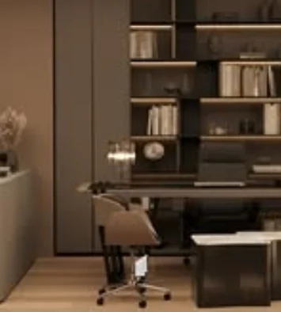
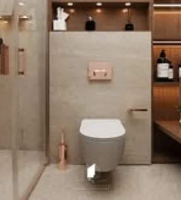
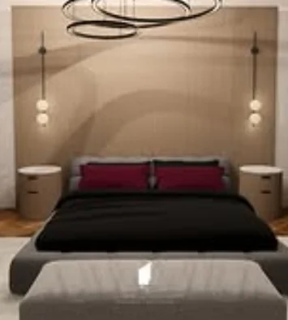

Zeytin yeşili banyo
Kemerli LED ayna, yivli dolap kapakları, traverten tezgah ve sıcak ışıklı nişler.

Arqli Interiors · İç mimarlık stüdyosu
Konut, ofis ve kafeler için konsept, 3D görselleştirme ve uygulama projesi. Mekânı önce kâğıtta kurar, sonra ışığıyla birlikte teslim ederiz.
Ölçü alınır, yerleşim çizilir. Her niş, her raf ve her ışık noktası daha ilk planda yerini bulur.
Kireç sıva, meşe ve traverten. Malzemeyi mekânın kendi ışığına göre, numuneyle seçeriz.
Kanepe, sehpa, raf ve bitki. Ölçüye göre, akışı bozmadan, her parça bir sebeple orada.
Kemerli nişte ve raflarda gizli LED, 2700 K. Aynı oda, gün batınca bambaşka bir his.
Stüdyo
Arqli, iki tasarımcının kurduğu bir iç mimarlık ve mimari tasarım stüdyosu. Bir banyonun nişinden bir kafenin sokağa açılan terasına kadar her işi aynı soruyla açıyoruz: burada kim, nasıl yaşayacak?
Cevabı önce plana, sonra malzemeye ve ışığa çeviririz. Teslim ettiğimiz şey yalnızca bir görsel değil; ustanın sahada okuyabileceği bir proje.
Projeler
Banyodan kafeye, son tasarımlarımızdan bir seçki. Görseller stüdyonun kendi paylaşımları.

Kemerli LED ayna, yivli dolap kapakları, traverten tezgah ve sıcak ışıklı nişler.

Sokağa açılan teras, siyah çerçeveli kemerli vitrin ve sıcak kırmızı sıva.

Işıklı raflı kütüphane duvarı, koyu ahşap ve sakin bir çalışma düzeni.

Gömme rezervuar, bakır armatürler ve gizli LED’li ahşap nişler.

Kemer gölgeli duvar, bordo dokunuşlar ve yumuşak yan aydınlatma.
Hizmetler
Stil, renk ve malzeme yönü. İlk toplantıdan sonra mekânın havasını tek sayfada görürsünüz.
Fotogerçekçi render ve izometrik kesitler. Uygulamadan önce gündüz ve akşam halini görün.
Plan, kesit, detay paftaları ve aydınlatma planı: ustanın sahada okuyacağı çizimler.
Ölçüye özel dolap, niş ve ıslak hacim tasarımı. Porselen, traverten, ahşap.
Kafe, ofis ve mağaza. Markanın kimliğini sokaktan içeriye taşıyan mekânlar.
Gizli LED, sarkıt ve aplik. Renk sıcaklığı ve ışık senaryosu projeyle birlikte.
Malzeme notu
Tasarımda zemin, duvar paneli, mutfak tezgahı ve tezgah arasında porselen kullanmayı tercih ettik.Arqli, Instagram
Süreç
Mekânı görür, ölçüleri alır, nasıl yaşadığınızı dinleriz.
Yerleşim alternatifleri ve moodboard ile yön belirlenir.
Gündüz ve akşam render’larıyla son kararlar verilir.
Teknik çizimler, malzeme listesi ve aydınlatma planı.
Sahada ekip ve tedarikçilerle birlikte, ışık yanana kadar.
Mekânını tasarla
Stili, duvar detayını, zemini ve ışığı seçin; salon üç boyutlu kurulsun. Gündüzden akşama çevirin, beğendiğiniz kombinasyonu bize gönderin, gerisini birlikte çizelim.
İletişim
Birkaç satır yazın: nerede, ne kadar büyük, nasıl bir his. İlk görüşmede ölçüyü ve yönü birlikte belirleriz.
Instagram@arqli.interiors